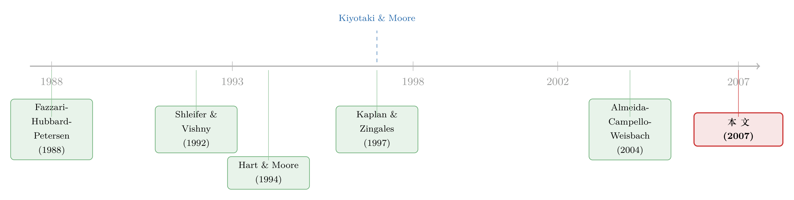

抵押品的「乘数」：为什么越是缺钱的公司，越要看「家当」能不能押
本文读的是 Almeida & Campello (2007, Review of Financial Studies)：可抵押的资产能撑起更多借款，而更多借款又被投回到可抵押的资产里——这个「信用乘数」意味着，投资对现金流的敏感度应当随资产的有形性 (tangibility) 上升，但只在公司受到融资约束时才如此。一旦公司因为家当足够厚实而摆脱了约束，有形性就不再起作用。作者用一个内生划分约束状态的转换回归 (switching regression) 把这个非单调的预测干净地验了出来，并由此绕开了悬在「投资—现金流敏感度」这套方法学头上多年的 Kaplan-Zingales 批评。
1 一个被批了二十年的「金标准」
先把场景摆出来。
研究「融资摩擦到底有没有影响真实投资」，几十年来有一条几乎是教科书级的识别思路，来自 Fazzari, Hubbard and Petersen (1988，下称 FHP)。他们的逻辑很朴素：如果外部融资比内部资金贵——这中间的「楔子 (wedge)」就是融资摩擦——那么一家公司越是融资受限，它的投资就越得依赖手头的内部现金流。于是，把公司按「是否受约束」的代理变量（分红率、规模、有无信用评级……）分成两组，分别估计投资对现金流的回归系数，再比较两组系数的大小，就能读出摩擦的影响。受约束那组的投资—现金流敏感度 (investment–cash flow sensitivity) 应当更高。这就是所谓的「单调性假设 (monotonicity hypothesis)」。
这套做法被无数论文沿用。但问题恰恰出在这个「单调」上。
Kaplan and Zingales (1997，下称 KZ) 直接把这块基石撬动了：他们论证，单调性根本不是「最优受约束投资」的必要性质——理论上，越受约束的公司，敏感度未必越高，反而可能越低。更糟的是，他们拿数据做了反例，发现敏感度最高的，恰恰是那些看起来最不缺钱的公司。紧接着，Erickson and Whited (2000)、Gomes (2001)、Alti (2003) 从另一个方向补刀：FHP 那种敏感度差异，在一个完全没有融资摩擦的模型里也照样能跑出来——只要 Q 测不准，现金流就会替「投资机会」背锅，于是敏感度差异其实是测量误差和投资机会的幻影，而不是融资摩擦的指纹。
所以到 2000 年代初，这套「金标准」几乎成了一桩悬案：投资—现金流敏感度到底还能不能用来识别融资约束？
接着，一个自然的问题是：有没有一种推断，不依赖于「敏感度随约束程度单调上升」这个被 KZ 否掉的前提，同时又不会被「无摩擦也能解释」这条退路轻易反驳？
Almeida 和 Campello 的回答是：有。换一个维度去切。
2 真正关键的一步：把「抵押品」请进来
不要再盯着「约束程度的高低」做文章了——那正是 KZ 批评的靶心。换一个变量：资产的有形性，也就是公司家当的可抵押程度。
直觉其实非常古典。一家公司的资产越有形、越容易在违约时被债权人变现，它就越能抵押出更多的外部融资——因为有形资产缓解了「可契约性 (contractibility)」问题，提高了清算状态下债权人能拿回的价值。这一点 Shleifer and Vishny (1992) 早就讲过：资产的清算价值决定了它能撑起多少债务。
但 Almeida-Campello 没有停在「有形性 → 借得更多」。他们借用 Kiyotaki and Moore (1997) 的信用乘数 (credit multiplier)，把这条链条绕回到了自己身上：
可抵押的资产撑起更多借款 → 更多借款被投回到可抵押的资产 → 这些新资产又能撑起更多借款……
于是，一笔现金流冲击对受约束公司投资的影响，会被资产的有形性放大。这里就藏着本文最漂亮的一个反转：有形性的作用是非单调的。
- 当公司受约束时，有形性越高，信用乘数越大，投资对现金流就越敏感；
- 但有形性高到一定程度，公司自己就把自己变成了不受约束——这时再加有形性，敏感度不会再涨，因为它已经掉到了零。
换句话说，本文不是去预测「敏感度随约束单调变化」，而是去预测「敏感度随有形性变化的方式，本身取决于公司处在哪种约束状态」。这恰恰把 KZ 的批评吸收进了自己的识别策略——作者承认敏感度和约束程度不是单调关系，但坚持认为敏感度依然能用来识别摩擦，只要你看对了维度。
（关于「融资约束」这个概念远不像看上去那么单一，可参见《同样是「借不到钱」，原因却各不相同：把融资约束拆回它的三个源头》；而信用乘数在没有摩擦时如何反而成为危机的放大器，可参见《杠杆是「果」，不是「因」：一个没有摩擦的危机故事》。）
下面我们就把这个乘数，一步步推出来。
3 模型：一个两期、两行约束的「乘数」
本文有一个极其简洁的理论框架，简洁到只需要两个时点、一条借款约束。我们把它显式推一遍，因为全篇的实证设计都从这里长出来。
设定。 经济只有两个时点，0 和 1。时点 0，企业拥有一项生产技术 \(f(I)\)，用物质投资 \(I\) 在时点 1 产出。生产必须依赖企业家投入她的人力资本——这是 Hart and Moore (1994) 的「人力资本不可剥夺 (inalienability of human capital)」假设：如果企业家撂挑子，留在公司里的就只剩物质投资 \(I\)。由于人力资本不可剥夺，她无法可信地承诺自己的投入，债权人因此只肯借到「清算价值」那么多。
把物质资本的单价标准化为 1。资产的可抵押性用一个比例参数刻画：若资产在时点 1 被债权人扣押变现，只有 \(\tau\in(0,1)\) 的比例能被收回。这个 \(\tau\) 正是「有形性」的自然映射——\(\tau\) 越高，资产越有形、越好变现，能借的钱越多。于是借款约束写成：
$$ B \le \tau I, \tag{1} $$
其中 \(B\) 是新投资项目能撑起的新债务。除了外部融资 \(B\)，企业还有内部资金 \(W\) 可用。
最优化。 假设贴现率为零，企业家最大化新投资的价值：
$$ \max_{I}\; f(I)-I \quad \text{s.t.} \quad I \le W + \tau I. \tag{2–3} $$
约束 (3) 的意思是：总投资 \(I\) 不能超过「内部资金 \(W\) + 能抵押出的外部融资 \(\tau I\)」。
第一步——先看不受约束的情形。 一阶最优的「第一优 (first-best)」投资 \(I^{FB}\) 满足 \(f'(I^{FB})=1\)。如果在 \(I^{FB}\) 处约束 (3) 仍然满足，企业就是不受约束的，它直接投到第一优水平。
第二步——找出何时受约束。 把 \(I=I^{FB}\) 代回约束 (3)，它被违反（即受约束，\(I^* < I^{FB}\)）当且仅当
$$ \tau < \tau^*(W, I^{FB}) = \max\!\left\{1-\frac{W}{I^{FB}},\,0\right\}. \tag{4} $$
这一步是全篇的枢纽：约束状态本身是 \(\tau\) 的函数。\(\tau\) 太低，门槛 \(\tau^*\) 拦住你，你受约束；\(\tau\) 足够高，越过门槛，你自动变成不受约束。注意若 \(I^{FB}-W<0\)（内部资金已经够投了），则 \(\tau^*=0\)，公司无论有形性多低都不受约束。
第三步——解出受约束时的投资。 受约束时预算约束取等号，\(I = W + \tau I\)，移项：
$$ I(1-\tau)=W \;\Longrightarrow\; I(W,\tau)=\frac{W}{1-\tau}. $$
合在一起就是最优投资的一般表达式：
$$ I(W,\tau)=\frac{W}{1-\tau},\ \text{if}\ \tau<\tau^*;\qquad I(W,\tau)=I^{FB},\ \text{if}\ \tau\ge\tau^*. \tag{5} $$
这个 \(\dfrac{1}{1-\tau}\) 就是信用乘数的真身。把它展开成几何级数 \(\frac{1}{1-\tau}=1+\tau+\tau^2+\cdots\)，意思一目了然：一块钱内部资金先投出去，撑起 \(\tau\) 的新借款，新借款又投出去撑起 \(\tau^2\)……层层放大。我们把这个核心方程用旁注拆开看：
第四步——读出敏感度。 对 \(W\) 求导：
$$ \frac{\partial I}{\partial W}(W,\tau)=\frac{1}{1-\tau},\ \text{if}\ \tau<\tau^*;\qquad \frac{\partial I}{\partial W}=0,\ \text{if}\ \tau\ge\tau^*. \tag{6} $$
受约束时，投资—现金流敏感度等于乘数 \(\frac{1}{1-\tau}\)；不受约束时，投资钉在 \(I^{FB}\)，对现金流毫不敏感，敏感度直接掉到零。
第五步——非单调性。 在受约束区间里再对 \(\tau\) 求一次导：
$$ \frac{\partial^2 I}{\partial W\,\partial\tau}=\frac{1}{(1-\tau)^2}>0,\quad \text{if}\ \tau<\tau^*. $$
严格为正——受约束公司的敏感度随有形性递增。而一旦 \(\tau\ge\tau^*\)，敏感度恒为零，对 \(\tau\) 的导数也就是零。这就是本文的 Proposition 1：
(i) 低有形性区间（\(\tau<\tau^*\)），公司受约束，\(\partial I/\partial W\) 随有形性上升； (ii) 高有形性区间（\(\tau\ge\tau^*\)），公司不受约束，\(\partial I/\partial W\) 与有形性无关。
[!tip] 这里有个容易被忽略的细节：本文的乘数并不依赖「人力资本不可剥夺」这个具体假设。作者明确指出，只要「新投资带来的外部融资能力是有形性的增函数」这一条成立——无论它来自信息不对称（有形资产的回报更易观察）、来自 Bernanke, Gertler and Gilchrist (1996) 的代理问题版本，还是来自数量约束之外的「外部融资有递增的死重成本」（如 Froot, Scharfstein and Stein (1993) 与 KZ 所设）——乘数都照样运转。模型的骨架比它的外衣更结实。
4 识别策略：让数据自己说出谁受约束
理论给了一个清晰的、可证伪的预测，接下来是怎么测。
最朴素的做法，是沿用 FHP 的老路：用某个先验特征（分红、规模、评级）把样本切成「受约束」和「不受约束」两组，然后在每组里分别估计一个带交互项的投资方程：
$$ \text{Investment}_{i,t}=\alpha_1 Q_{i,t-1}+\alpha_2 \text{CashFlow}_{i,t}+\alpha_3 \text{Tangibility}_{i,t}+\alpha_4 (\text{CashFlow}\times\text{Tangibility})_{i,t}+\sum_i \text{firm}_i+\sum_t \text{year}_t+\varepsilon_{i,t}. \tag{7} $$
这里交互项系数 \(\alpha_4\) 是全篇的「主角」。注意一个微妙之处：因为模型是交互形式，现金流的偏效应是 \(\alpha_2+\alpha_4\times\text{Tangibility}\)，所以单看 \(\alpha_2\) 几乎没有意义——它代表有形性等于零时的现金流效应，而零落在有形性经验分布之外。真正要看的是 \(\alpha_4\) 的符号。理论预测：受约束组 \(\alpha_4>0\)，不受约束组 \(\alpha_4\approx 0\)。
但真正关键的一步在于：本文不满足于「先验地」切样本。因为模型的核心恰恰说，约束状态本身是内生的、并且取决于有形性——你不能先用一个外生标准把公司钉死在某一组，再去检验有形性的作用，这本身就有循环论证的味道。
于是作者搬来了 Hu and Schiantarelli (1998) 与 Hovakimian and Titman (2006) 用过的未知样本分割的转换回归。模型是下面这个联立方程系统，用极大似然一次性估出来：
$$ I_{1it}=X_{it}\alpha_1+\varepsilon_{1it},\qquad I_{2it}=X_{it}\alpha_2+\varepsilon_{2it},\qquad y_{it}^{*}=Z_{it}\phi+u_{it}. \tag{8–10} $$
前两条是两个「投资机制 (regime)」下的结构方程（都是 (7) 的版本），第三条是选择方程 (selection equation)：潜变量 \(y_{it}^*\) 决定一家公司落在机制 1 还是机制 2，
$$ I_{it}=I_{1it}\ \text{if}\ y_{it}^{*}<0;\qquad I_{it}=I_{2it}\ \text{if}\ y_{it}^{*}\ge 0. \tag{11} $$
三个误差项 \((\varepsilon_1,\varepsilon_2,u)\) 联合正态、允许相关，约束状态与投资行为同时被估计——不需要事先告诉计量经济学家谁受约束。这套做法相对 FHP 老路有个实打实的好处：选择方程里可以同时放进多个约束代理（规模、年龄、成长机会，以及——本文的点睛之笔——有形性），而传统切样本一次只能用一个变量。
转换回归只能把公司分成「投资行为不同的两类」，它不会自动告诉你哪一类是受约束的。这一步要靠理论先验来钉死：作者用「哪种特征与融资约束相关」来给两个机制贴标签。文中说，在他们的数据里这个贴标签「毫不含糊 (unambiguous)」——高有形性的公司更可能被归入不受约束那一类，正与模型相符。这是把理论的可证伪性押在了一个识别假设上，读者要心里有数。
5 数据与主要结果
数据。 样本取自 COMPUSTAT 的 P/S/T 与 Research 卷，制造业公司（SIC 2000–3999），1985–2000 年。沿用 Gilchrist and Himmelberg (1995) 与 Almeida, Campello and Weisbach (2004) 的筛选：剔除资本存量低于 $5 million 的公司年、实际资产或销售增长超过 100% 的（多为并购重组）、以及 Q 为负或大于 10 的。要求公司至少连续出现三年。最终样本 18,304 个公司年。值得一提的是，这套 Q 的上下界把样本平均 Q 压到约 1.0，比不设界的研究（KZ 报 1.2，Polk and Sapienza (2004) 报 1.6）更贴近线性投资模型适用的区间。
变量。 Investment = 资本开支（item #128）除以期初资本存量（滞后 item #8）；Q = 资产市值/账面值；CashFlow = （item #18 + item #14）除以期初资本存量。基准有形性代理取自 Berger, Ofek and Swary (1996)，衡量公司主要经营资产（现金、应收账款、存货、固定资本）的预期清算价值；另用 Shleifer-Vishny (1992) 思路的行业层面二手资产可销售性代理做稳健性。
结果。 核心发现与 Proposition 1 完全吻合：资产有形性显著正向地提高了受约束公司投资的现金流敏感度，而对不受约束公司没有作用。也就是说，受约束机制里 \(\alpha_4>0\) 且显著，不受约束机制里 \(\alpha_4\) 不显著。这一模式有三重稳健性：
- 估计量不变——极大似然（转换回归）、传统 OLS、以及对测量误差稳健的 GMM，三者结论一致；
- 代理不变——无论用公司层面还是行业层面的有形性代理，推断相同；
- 而且选择方程给出一个额外的、与理论一致的旁证：有形性越高的公司，越可能被判为不受约束——这正是模型里「家当够厚就自己摆脱约束」的内生机制在数据里的影子。
作者强调这个效应「经济上显著 (economically significant)」。（论文随后给出的回归表中有具体系数量级；本文据以评述的正文在结果表处被截断，故这里只忠实复述其符号与显著性模式，不杜撰具体系数。）
为什么这能绕开两条批评？第一，对 KZ：本文压根不假设敏感度随约束程度单调，反而把「非单调」写进了识别。第二，对「无摩擦也能解释」：在一个没有融资摩擦的世界里，有形性没有理由只在受约束公司里放大现金流敏感度——这个交叉差异是摩擦留下的、难以用无摩擦模型复制的指纹。这正是本文区别于标准 FHP 结果的地方。
6 文献脉络
把这条线索捋直，能看清本文站在哪。
最上游是两条几乎独立的河。一条是投资—现金流敏感度这套实证传统，从 Fazzari, Hubbard and Petersen (1988) 起家，盛极一时，又被 Kaplan and Zingales (1997) 一篇批评搅得天翻地覆，Erickson and Whited (2000)、Gomes (2001)、Alti (2003) 接着把「无摩擦也能解释」的退路一一铺开。另一条是抵押品与债务能力的理论传统：Shleifer and Vishny (1992) 把清算价值和债务能力挂钩，Hart and Moore (1994) 用人力资本不可剥夺给出微观基础，Kiyotaki and Moore (1997) 则把抵押品自我放大的「信用乘数」写成了宏观动态。

Almeida 和 Campello 做的，是把这两条河接到了一起：用 Kiyotaki-Moore 的乘数，去修复 FHP 这套被批得遍体鳞伤的识别。同一时期，Almeida, Campello and Weisbach (2004) 从「现金的现金流敏感度」这个纯财务变量入手检验约束，本文则更进一步，把摩擦和真实投资决策直接挂钩。沿着抵押品这条线往后，Gan (2006) 利用日本地价崩盘这个外生冲击，给信用乘数提供了「准自然实验」式的证据——这与本文是互补的两种识别路径。（关于抵押品价值的外生波动如何写进企业投资，可参见《地价腰斩之后，是谁替企业按下了投资的暂停键》。）
7 评论与延伸（Q&A + 研究方向）
(a) 几个可能的疑问
Q：本文凭什么说自己「不受 KZ 批评」？KZ 不是把整套敏感度方法都否了吗？
KZ 否的是「敏感度随约束程度单调上升」这个假设。本文根本不用这个假设——它预测的是「敏感度随有形性变化的斜率取决于约束状态」，是一个交叉（差异中的差异）模式。KZ 的反例（最不缺钱的公司敏感度最高）在本文框架里甚至是被允许的，因为约束状态是内生于有形性的。所以本文是把 KZ 的批评消化进了识别，而不是回避它。
Q：转换回归不就是「换个名字的样本切割」吗？凭什么更可信？
关键差别有两点。其一，它内生地估计样本分割点，而不是先验钉死，这与「约束状态取决于有形性」的理论自洽。其二，选择方程能同时容纳多个约束代理并评估各自在控制其他因素后的显著性，而传统切割一次只能用一个变量。代价是它把可证伪性押在「哪个机制是受约束的」这个标签上——所幸本文报告这个标签在数据里毫不含糊。
Q：有形性会不会只是「投资机会」的代理？那敏感度差异岂不又是 Q 测不准的老问题？
这正是 Erickson-Whited 那条退路想说的。本文的防线是那个交叉模式：若有形性只是投资机会的代理，它没有理由偏偏只在受约束公司里放大现金流敏感度、而对不受约束公司毫无作用。无摩擦模型很难复制这种「只在一侧起作用」的不对称。当然，这条防线不是铁板一块——见下一问。
Q：那本文最该担心的识别漏洞在哪？
在于有形性、约束状态、投资机会三者可能纠缠。Berger-Ofek-Swary 的清算价值代理是用资产构成算出来的，而资产构成本身可能与公司所处的技术、成长阶段相关；高有形性公司（重资产、成熟）和低有形性公司（轻资产、高成长）在投资机会的性质上系统不同。转换回归控制了一阶的约束选择，但要完全排除「有形性 × 现金流」捕捉到的是某种未被 Q 吸收的投资机会异质性，仍需更外生的有形性变动。
Q：数量约束（借不到）和成本约束（借得贵）会改变结论吗？
不会改变方向。作者明确讨论：即便公司能突破抵押限额去借「无抵押」的钱，只要这部分钱有递增的死重成本（如 Froot-Scharfstein-Stein、KZ 所设），乘数照样存在——有形性高就意味着同样一笔新投资对边际融资成本的抬升更小，于是投资对现金流冲击的反应更大。乘数的本质是「抵押品压低了外部融资的边际成本」，而不限于硬性的数量上限。
Q：为什么样本只挑制造业、还把 Q>10 的公司全删了？会不会挑出了想要的结论？
制造业 + 资本存量 ≥
$5M是为了让线性投资模型站得住（小公司、极端 Q 处线性模型拟合很差，Abel-Eberly 早有讨论）。删 Q 上下界把平均 Q 压到约1.0，确实改善了模型拟合，但也意味着结论是关于「中等估值的成熟制造业公司」的，对高成长、轻资产行业的外推要谨慎。
(b) 几个可能的研究问题与提案
1. 把「有形性乘数」搬到公司债与信用利差上。 【经济故事】本文讲的是投资端，但同一个抵押品乘数也应当反映在融资端：受约束、低有形性的公司，其债券的信用利差对现金流冲击应当更敏感，因为它们的边际融资成本曲线更陡。 【可行性】中。需要 TRACE 的公司债成交数据 + Compustat 基本面，构造有形性 × 现金流冲击的交互，看利差变动。识别上可借本文的转换回归思路内生划分约束状态。难点在于把「投资敏感度」翻译成「定价敏感度」时要控制信用风险本身的变化。
2. 外资持有人是否改变了「有形性—约束」的映射？ 【经济故事】外国投资者进入往往放松了公司的外部融资约束（提高 \(W\) 的可得性或降低融资成本），按本文逻辑，这会把一部分原本受约束的低有形性公司推过 \(\tau^*\) 门槛，从而削弱有形性对现金流敏感度的放大作用。 【可行性】中。可用跨国 Compustat Global + 外资可投资度（investability）的变动做准自然实验。识别需要外资准入的外生时点（如 MSCI 纳入、QFII 额度调整）。doable，但要小心外资进入与有形性的内生相关。
3. 资产「可重复抵押 (rehypothecation)」如何改变乘数的大小？ 【经济故事】本文的 \(\tau\) 是静态的回收率。但若抵押品可被链条上多方反复抵押，等价于把乘数 \(\frac{1}{1-\tau}\) 进一步放大——这正是影子银行里货币乘数的来源。把可重复抵押写进 Almeida-Campello 框架，能预测哪些行业的投资对冲击异常敏感。 【可行性】低到中。理论扩展容易，实证难——需要抵押品再抵押的微观数据（多见于回购、券商间），与上市公司投资数据难以直接对接。更适合先做理论 + 校准。
4. 用一次外生的抵押品价值冲击直接估乘数。 【经济故事】本文的 \(\tau\) 是估出来的代理，而非外生变动。若能找到一次只改变资产清算价值、不改变投资机会的冲击（如某类二手设备市场的需求崩塌、或抵押品法律保护的改革），就能更干净地估出乘数 \(\frac{1}{1-\tau}\) 的真实斜率——这正是 Gan (2006) 路线的延伸。 【可行性】中。需要资产专用性高、二手市场可观测的行业（航空、航运、特种设备）。识别强，但样本会很窄，外推性受限（Rosenzweig-Wolpin 对自然实验外推的告诫在此适用）。
8 我的判断
这篇论文最值得敬佩的地方，是它用理论的优雅换来了识别的干净。它没有去发明新的数据或新的工具变量，而是换了一个被忽略的维度（有形性），把一套濒临破产的方法学（投资—现金流敏感度）重新立了起来——并且立的方式恰好把对手最锋利的批评（KZ 的非单调、Erickson-Whited 的无摩擦退路）一并化解。一个两期、两行约束的模型能撑起这么多，是这条文献里少见的「以简驭繁」。
我的保留主要在识别的最后一公里。有形性是个估出来的、与公司技术和成长阶段高度相关的变量，转换回归虽然内生地处理了约束选择，却没法保证「有形性 × 现金流」交互项里不混入未被 Q 吸收的投资机会异质性。本文的交叉模式（只在受约束一侧起作用）是很强的防线，但它毕竟是观察性的，不是外生冲击。
后续我最想看到的，是把这个乘数接到一次真正外生的抵押品价值变动上去（Gan 2006 是个好开端），直接把 \(\frac{1}{1-\tau}\) 的斜率估出来，而不是从交互项里间接读符号；以及把它从投资端推到信用市场的定价端——如果抵押品乘数是真的，它不该只写在资本开支里，也该写在债券利差里。
参考文献
- Almeida, H., M. Campello, and M. Weisbach (2004). The Cash Flow Sensitivity of Cash. Journal of Finance 59, 1777–1804.
- Alti, A. (2003). How Sensitive is Investment to Cash Flow When Financing is Frictionless? Journal of Finance 58, 707–722.
- Berger, P., E. Ofek, and I. Swary (1996). Investor Valuation and Abandonment Option. Journal of Financial Economics 42, 257–287.
- Bernanke, B., M. Gertler, and S. Gilchrist (1996). The Financial Accelerator and the Flight to Quality. Review of Economics and Statistics 78, 1–15.
- Erickson, T., and T. Whited (2000). Measurement Error and the Relationship between Investment and Q. Journal of Political Economy 108, 1027–1057.
- Fazzari, S., R. G. Hubbard, and B. Petersen (1988). Financing Constraints and Corporate Investment. Brookings Papers on Economic Activity 1, 141–195.
- Froot, K., D. Scharfstein, and J. Stein (1993). Risk Management: Coordinating Corporate Investment and Financing Policies. Journal of Finance 48, 1629–1658.
- Gan, J. (2006). Financial Constraints and Corporate Investment: Evidence from an Exogenous Shock to Collateral. Journal of Financial Economics (forthcoming).
- Gilchrist, S., and C. Himmelberg (1995). Evidence on the Role of Cash Flow for Investment. Journal of Monetary Economics 36, 541–572.
- Gomes, J. (2001). Financing Investment. American Economic Review 91, 1263–1285.
- Hart, O., and J. Moore (1994). A Theory of Debt Based on the Inalienability of Human Capital. Quarterly Journal of Economics 109, 841–879.
- Hovakimian, G., and S. Titman (2006). Corporate Investment with Financial Constraints: Sensitivity of Investment to Funds from Voluntary Asset Sales. Journal of Money, Credit, and Banking 38, 357–374.
- Hu, X., and F. Schiantarelli (1998). Investment and Capital Market Imperfections: A Switching Regression Approach Using U.S. Firm Panel Data. Review of Economics and Statistics 80, 466–479.
- Kaplan, S., and L. Zingales (1997). Do Financing Constraints Explain Why Investment is Correlated with Cash Flow? Quarterly Journal of Economics 112, 169–215.
- Kiyotaki, N., and J. Moore (1997). Credit Cycles. Journal of Political Economy 105, 211–248.
- Shleifer, A., and R. Vishny (1992). Liquidation Values and Debt Capacity: A Market Equilibrium Approach. Journal of Finance 47, 1343–1365.